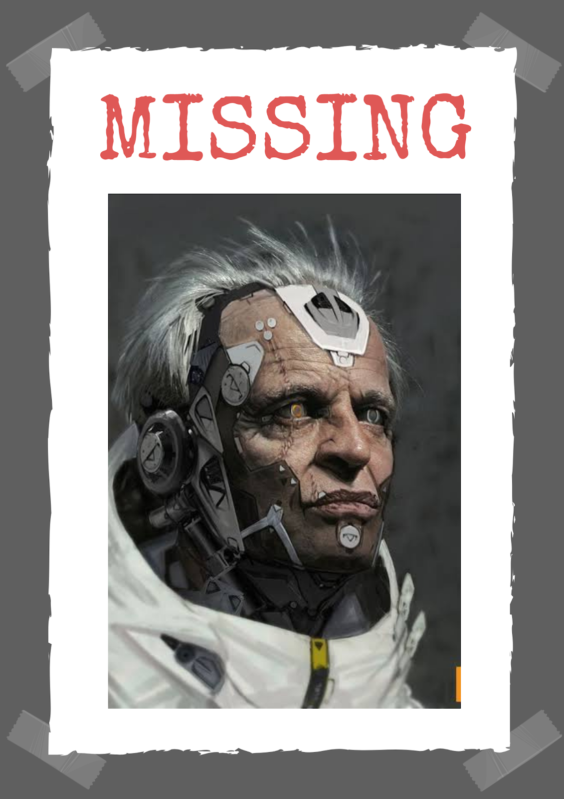

Key Source In Operation H Goes Missing. Investigation Underway
Dr.Frenko disappears without a trace, foul play suspected.
Tasmania: The news of Operative Frenko's disappearance has sent shockwaves across the Overground. Declared offline twenty five years ago with the help of Interference Division, the Operative was among the many spies planted in the Underworld, passing on key information while simultaneously running a chain of Service Stations to covertly undo DevCorps influence over his customers implant by implant. It was through one of these Service Stations that his disappearance was reported. Operative Wyll noticed around the 6th hour that Dr. Frenko had not set up his Station, nor was there any entry made that day. The last entry, made the previous evening, was only half written, suggesting that Frenko might have been taken captive.
For the last two decades, Dr. Oliver Frenko has been spearheading the efforts to revolutionise our defence. While his interactions were not limited to other Operatives, all evidence points to his disappearance as orchestrated by the Underworld. Taking the level of security Operative Frenko had employed, the only viable cause of his capture would be betrayal. Unfortunately, not all Operatives can be recalled for interrogation without arousing suspicion in the Underworld. However, a reward of upto five thousand erda has been declared for any leads or information on the Operative's disappearance. It is the Overground's hope that Dr. Frenko's role in Operation H is quickly taken over. In the meanwhile, efforts to trace the Operative are underway. He is survived by his estranged daughter Praire Frenko.